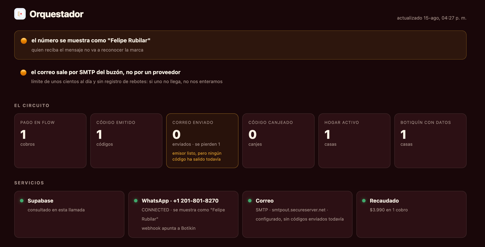
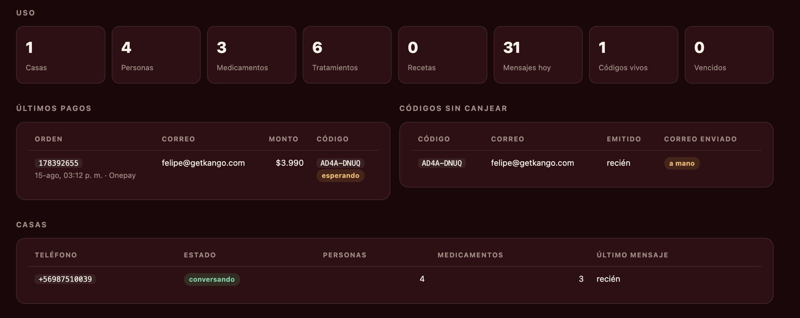

Manual del orquestador
Cómo está armado Botikin, cómo mirar si está sano, y qué hacer cuando algo se cae. Escrito para quien lo opera.
Uso interno · Botikin · Santiago de Chile
Cómo está armado Botikin, cómo mirar si está sano, y qué hacer cuando algo se cae. Escrito para quien lo opera.
Cinco piezas. Cada una puede fallar sola, y el panel te dice cuál.
Kapso es solo el cartero. El cerebro del agente vive en nuestro código,
en una Edge Function de Supabase, y su carácter en el archivo
soul.md. Si mañana cambiamos de proveedor de WhatsApp, se
reescribe un archivo y nada más.
| Qué | Dónde |
|---|---|
| La web, el demo, el panel, los cobros | Vercel · proyecto botikin |
| La base y el agente | Supabase · lpkkhraoymqxersfxvsz |
| El número de WhatsApp | Kapso |
| El código fuente | github.com/felipeKango/Botikin |
botikin.app/admin · pide una clave. Se refresca solo cada 30 segundos.

Son cinco pasos por los que pasa la misma persona, en orden. Si un número es menor que el anterior, ahí se está perdiendo gente y el recuadro se pinta en ámbar.
| Paso | Qué significa si cae |
|---|---|
| Pagó | — |
| Recibió su código | Un pago sin código: revisar el webhook de Flow |
| Activó por WhatsApp | El más caro. Pagaron y no entraron |
| Contó su casa | Entraron y abandonaron el onboarding |
| Cargó un remedio | Nunca llegaron al momento que da valor |
Cuatro luces. Verde es que respondió en esta misma consulta, no que respondió alguna vez.

"Códigos sin canjear" es la tabla que más hay que mirar. Cada fila es alguien que pagó y todavía no entró. La columna correo enviado dice si el código salió o hay que entregarlo a mano.
La más cara y la más silenciosa: nadie reclama, simplemente no vuelve. El panel te da el correo y el código. Escríbele a esa persona con su código y el link de WhatsApp. Si son varios el mismo día, revisa que el correo esté saliendo.
Los WhatsApp entrantes se están perdiendo sin ningún error visible: la gente escribe y nadie responde. Entra a Kapso → el número → Webhooks y confirma que el activo apunte a la función de Supabase.
Riesgo real: recordarle a alguien una toma de algo que ya terminó. Se arregla
corriendo cerrar_tratamientos_vencidos() en el editor SQL de Supabase.
Quien recibe el mensaje ve ese nombre junto a un +1 desconocido.
Se cambia en Kapso y pasa por aprobación de Meta.
No es un problema hoy, es una deuda: techo de unos cientos diarios y sin registro de rebotes — si un correo no llega, nadie se entera. Migrar a Resend son tres registros DNS.
Para una invitación sin cobro (prensa, prueba, un amigo). En Supabase → SQL Editor:
select * from issue_access_code('persona@correo.cl', 'Nombre', 'manual');
Es idempotente por correo: si esa persona ya tiene un código vivo, te devuelve el mismo en vez de crear otro.
update access_codes set status = 'revoked' where code = 'ABCD-EFGH';
select direccion, texto, created_at from mensajes where hogar_id = (select id from hogares where telefono = '+569XXXXXXXX') order by created_at;
Cuando alguien cambia de número. Nunca borres y recrees el hogar: se llevaría por delante a la familia, el inventario y los tratamientos.
update hogares set telefono = '+569NUEVO' where telefono = '+569VIEJO';
select * from registrar_pago(
'orden-flow', 3990, 'exitoso', 'persona@correo.cl',
'Onepay', '1234', now(), '{}'::jsonb);
Devuelve el código de acceso. Es idempotente por número de orden: si Flow reintenta la notificación, no genera dos códigos.
curl -X POST https://botikin.app/api/probar-correo \
-H "x-panel-clave: LA_CLAVE" \
-H "content-type: application/json" \
-d '{"para":"tu@correo.cl"}'
Ninguna vive en el código. Están en Vercel y en Supabase, y una
copia local en MVP/.env, que git ignora.
| Llave | Para qué | Dónde |
|---|---|---|
| ANTHROPIC_API_KEY | El cerebro del agente | Supabase |
| SUPABASE_SERVICE_KEY | Acceso total a la base | Vercel |
| KAPSO_API_KEY | Enviar y recibir WhatsApp | ambos |
| KAPSO_WEBHOOK_SECRET | Verificar que el mensaje viene de Kapso | Supabase |
| FLOW_API_KEY / SECRET | Cobrar | Vercel |
| SMTP_PASSWORD | Mandar el correo | Vercel |
| PANEL_CLAVE | Entrar al panel | Vercel |
whatsapp → LogsEs el búfer de Kapso apagado. Debe estar en 8 segundos con
buffer_enabled activo, para que cuatro fotos seguidas sean un
solo turno y una sola respuesta.
registrar_pago()Deudas conocidas, en orden de urgencia.
| Qué | Por qué importa |
|---|---|
| El cobro no se renueva solo | Flow no tiene habilitado el cargo automático (error 7001), así que hoy cada mes hay que recobrar. Pedirle a Flow el contrato de cargo automático. |
| Sin plantillas aprobadas por Meta | El agente no puede hablar primero: fuera de la ventana de 24 horas solo se permiten plantillas. Sin ellas no hay recordatorios de toma ni avisos de vencimiento — que es la mitad del producto. |
| El proceso diario de vencimientos | Nadie revisa los vencimientos cada mañana todavía. Depende de lo anterior. |
| Sin catálogo del ISP | El agente detecta duplicados por coincidencia exacta de principio activo. Con el registro del ISP reconocería equivalencias entre marcas. |
| Las recetas no se guardan | Se leen y se crean los tratamientos, pero el documento original y el nombre del médico no quedan archivados. |
| Correo por SMTP | Techo diario y sin registro de rebotes. |